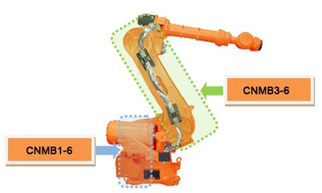

기존 에러코드: E0112 (○축) IPM 폴트
1.1.63.1. 개요
모터를 구동하는 서보 구동장치 내의 스위칭 소자인 IPM(Intelligent Power Module)에서 폴트 출력이 발생하였습니다. IPM 폴트는 방열판의 온도 상승, IPM의 제어전압 저하 및 과전류 출력에 의해 발생할 수 있습니다.
1.1.63.2. 원인 및 점검방법
|
< 특정 스텝에서 발생하는 경우> (1) 에러가 발생하는 스텝에서 로봇을 점검하여 주십시오, n 에러가 발생하는 위치에서 로봇의 배선을 점검하여 주십시오. n 로봇의 재생 속도를 낮추어 에러를 확인하여 주십시오. n 티칭된 스텝의 보간을 변경한 후 에러를 확인하여 주십시오. |
(1) 에러가 발생하는 스텝에서 로봇을 점검하여 주십시오.
IPM 폴트 에러가 특정 스텝에서 발생하는 경우는 티칭된 스텝에서 기구 배선의 손상의 효과가 크게 나타나거나 티칭된 프로그램의 자세변환 시 축속도가 크게 변하는 경우에 발생할 수 있습니다.
n 에러가 발생하는 위치에서 기내 배선을 점검
로봇 내부의 모터로 연결되는 해당 축의 배선 상태를 점검합니다. 점검 시에는 제어기의 전원을 OFF한 상태에서 출력 커넥터를 서보 구동장치에서 분리한 후 케이블 측의 각 상과 접지간 저항 값을 측청하여 단락여부를 확인하여 주십시오

그림 1.178 HS165의 축별 기내 배선 점검 위치
n 로봇의 재생 속도를 낮추어 애러 확인
로봇의 자세변화가 축속도의 급격한 변화를 유발하는 스텝에서 에러가 발생하는 경우에는 재생 속도를 낮추어 에러를 확인합니다. 재생 속도를 낮추어 에러가 해소되는 경우에는 해당 스텝의 티칭 속도를 변경하여 작업 프로그램을 기록 후 사용하십시오.
n 티칭된 스텝의 보간을 변경하여 에러 확인
재생 속도를 75%이하로 낮추어도 축속도가 급격히 변화는 경우에는 티칭된 스텝의 보간을 ‘P’로 변경하여 에러를 확인하여 주십시오. 만약에 동일한 재생 속도에서 보간의 변경으로 에러가 해결되는 경우에는 티칭을 수정하여 주십시오.